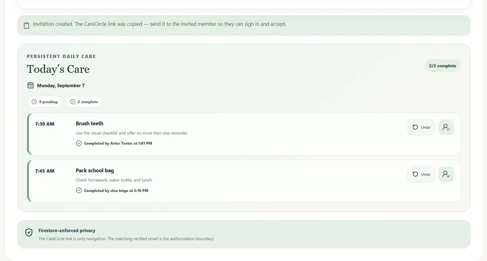
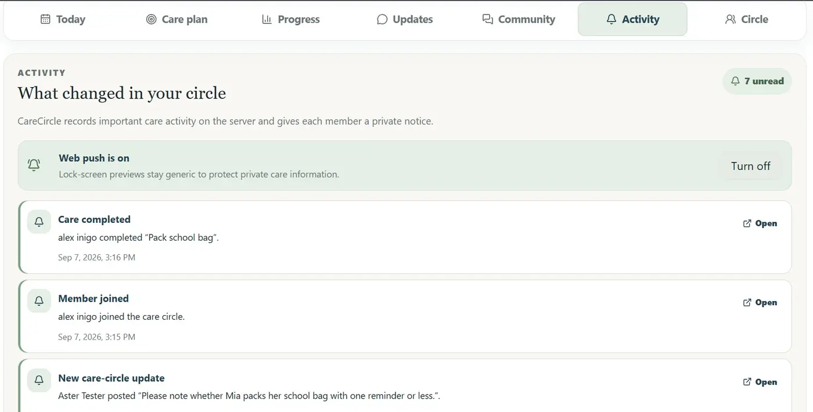
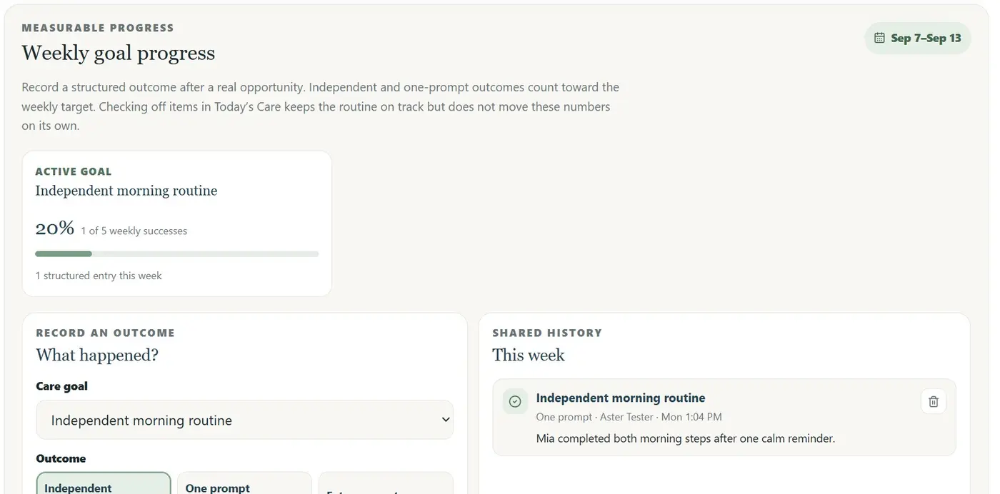
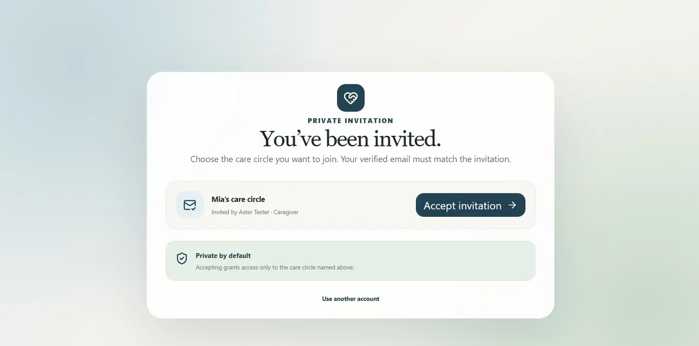
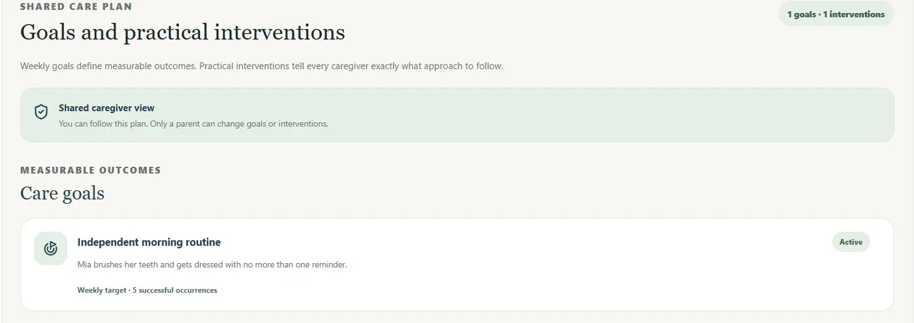

Parent creates the circle
The parent sets up the child’s private care space, measurable goals, interventions, and recurring daily-care items.
Private client review
CareCircle gives parents and trusted caregivers one private place for daily care, shared strategies, progress, handoffs, and support.
For review only. Please allow about 10 minutes for the checklist below.


How it works
The workflow stays simple for families while preserving clear roles and privacy boundaries.
The parent sets up the child’s private care space, measurable goals, interventions, and recurring daily-care items.
A caregiver uses the invitation email, verifies the matching address, and accepts only the access the parent granted.
Members complete care, record structured outcomes, exchange handoffs, and receive privacy-safe activity notifications.
Role boundaries
Parents retain control. Caregivers can collaborate fully in the day-to-day workflow without changing the parent-managed care plan.
Daily care
Parents create recurring items; caregivers complete them. Every action records who helped and when.
Shared progress
CareCircle separates “what was done” from “how independently the goal was achieved,” making progress more meaningful.

Trusted access
The verified invited email is matched to the correct care circle. A caregiver does not create a second parent workspace.

Privacy-safe coordination
Requests, replies, activity history, and optional web push help the circle respond quickly while keeping lock-screen text generic.

10-minute acceptance review
Use the MVP naturally, then confirm whether these core experiences match the intended CareCircle product.